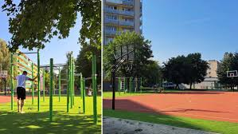

Aktuality
| Ikona | Dátum | Aktualita | Popis | Obrázok |
|---|---|---|---|---|
| 13.01.2025 | Nový kultúrny festival v Kysuckom Novom Meste! | S radosťou oznamujeme nový kultúrny festival "Kysucké Kultúrne Dni", ktorý sa bude konať 13. - 1. januára. Tento festival prinesie pestrý program vrátane vystúpení miestnych folklórnych súborov, tradičných remesiel a chutného miestneho jedla. Príďte si vychutnať kultúru a tradície Kysúc naživo! | ||
| 15.01.2025 | Otvorenie nového športového areálu | Dnes bol v našom meste slávnostne otvorený nový športový areál pri Základnej škole Kysucká. Areál ponúka nové ihriská na futbal, basketbal, a tenis, ktoré sú k dispozícii pre všetkých obyvateľov. Príďte si vyskúšať nové športové vybavenie! |  |